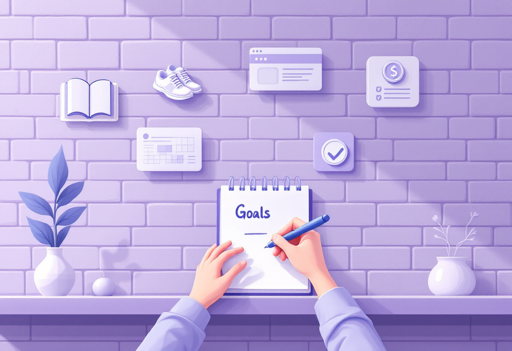
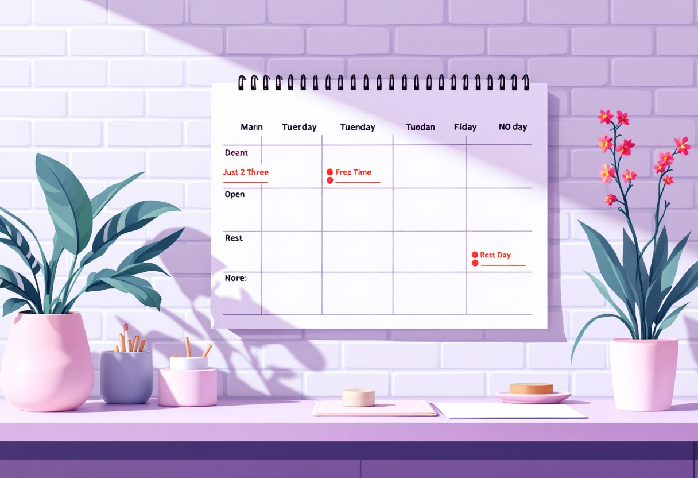
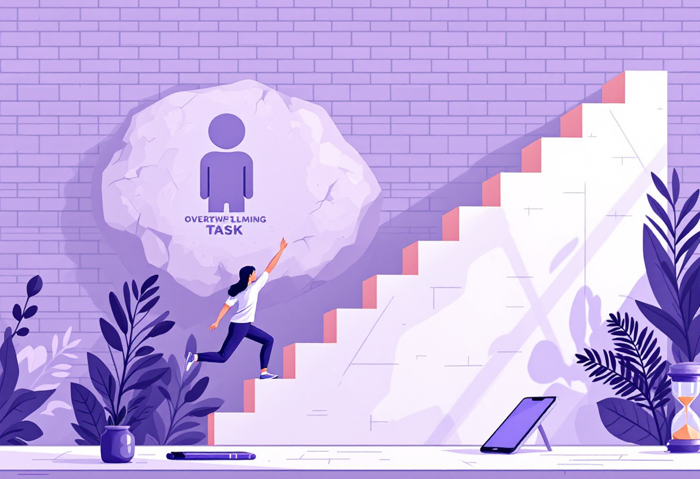

Планування життя
Реалістичні цілі, фокус і щоденний ритм — без тиску і перфекціонізму.

Як ставити цілі, які справді виконуються
Більшість цілей не виконується, бо вони розмиті або нереалістичні. Ось як поставити інакше.
- Конкретно: «Пробігати 5 км» — замість «займатись спортом».
- Вимірювано: як ти дізнаєшся, що досяг мети?
- Реалістично: ціль має бути складною, але не неможливою.
- З дедлайном: «До кінця квітня» — а не «колись».

Тижневий ритм: плануй менше, роби більше
Добрий тиждень починається з 10-хвилинного планування у неділю ввечері.
- Визнач 3 головні задачі на тиждень — не 15, а саме 3.
- Розподіли задачі по днях з урахуванням своєї енергії (понеділок-середа — пік).
- Залишай «буферний» час — 20–30% на непередбачуване.
- П'ятниця: короткий огляд тижня — що зроблено, що переноситься.

Фокус і боротьба з прокрастинацією
Прокрастинація — це не лінь. Це уникання через страх, нудьгу або невизначеність.
- Правило 2 хвилин: якщо задача займає до 2 хв — зроби одразу.
- Техніка Pomodoro: 25 хв роботи, 5 хв перерви.
- Якщо не починається — «поїж слона по шматочках»: розбий на мікрокроки.
- Прибери телефон з поля зору під час роботи — це реально допомагає.
Баланс: коли зупинитись і відпочити
Продуктивність без відновлення — це шлях до вигорання. Відпочинок — частина плану.
- Плануй відпочинок так само, як плануєш задачі.
- Визнач свій «стоп-сигнал»: час або умова, коли ти перестаєш працювати на день.
- Хобі і фізична активність — не витрата часу, а заряджання батареї.
- Якщо перевантажений — не додавай задачі, а прибирай зайве.